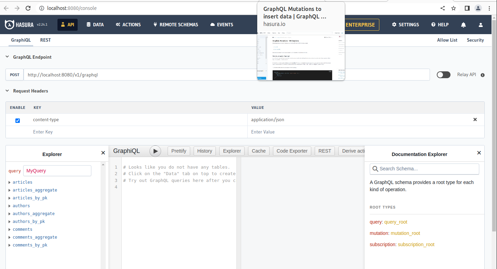

CloudNativePG and Hasura: should we be scared by demons?

May 1, 2023 • 7 minutes

CloudNativePG is a production-grade PostgreSQL operator for Kubernetes. It is also a great way to bootstrap a comfortable development environment.
In this blog post, we’ll create a CloudNativePG cluster with a few example tables, and we’ll use Hasura to bootstrap a GraphQL API that your application can use to store and retrieve data efficiently.
Getting set up with Kubernetes and KinD
A Kubernetes cluster is required to follow this tutorial.
You can create a test cluster on your laptop using Docker and
KinD.
You will also need the CLI tool kubectl. Please refer to
the kubernetes guide
for details.
Installing CloudNativePG
To install CloudNativePG, we’ll follow the installation and upgrade section of the CloudNativePG website.
At the time of writing, the latest version is 1.20. The following command will deploy the CloudNativePG operator on your local Kubernetes cluster:
kubectl apply -f https://raw.githubusercontent.com/cloudnative-pg/cloudnative-pg/release-1.20/releases/cnpg-1.20.0.yaml
We should wait until CloudNativePG is up and running.
It’s enough to wait until the READY column shows 1/1. Should be a few seconds:
$ kubectl get deployments -n cnpg-system
NAME READY UP-TO-DATE AVAILABLE AGE
cnpg-controller-manager 1/1 1 1 6d16h
Creating a PostgreSQL cluster
The simplest CloudNativePG example cluster creates a High-Availability architecture with a primary database node and two replicas. We can simply apply the example manifest included with CloudNativePG:
$ kubectl apply -f https://cloudnative-pg.io/documentation/1.20/samples/cluster-example.yaml
cluster.postgresql.cnpg.io/cluster-example created
We should now wait for the cluster to be up and running:
$ kubectl wait --for=condition=Ready cluster/cluster-example
cluster.postgresql.cnpg.io/cluster-example condition met
Now we have our sandbox ready for testing.
Installing Hasura
The Hasura GraphQL GitHub repo includes some Kubernetes manifests we can use as a starting point. Please refer to the Hasura documentation for further information about the Kubernetes manifests.
We must inject our PostgreSQL credentials into the Hasura deployment manifest, and we’ll do that using the secret automatically created by the CloudNativePG operator.
CloudNativePG creates an unprivileged user called app (you can override the
name) for applications to use. It uses secrets
to manage user credentials.
The cluster-example-app secret created by the operator contains the
credentials for the app user.
A database called app is also created, and set as owned by the app user.
CloudNativePG creates some services to expose and manage the database network
connections. In particular, given our cluster named cluster-example, there
is a cluster-example-rw service always targeting the primary instance. We
will use the service for connection.
To connect our PostgreSQL cluster to the Hasura deployment, then, we will:
- Inject the password into the
PGPASSWORDenvironment variable in the Hasura manifest - Use
cluster-example-app-rwas a target hostname. - Use
appas the database name.
apiVersion: apps/v1
kind: Deployment
metadata:
name: hasura
spec:
[...]
template:
spec:
containers:
- name: hasura
env:
- name: HASURA_GRAPHQL_DATABASE_URL
value: postgres://app@cluster-example-rw
- name: PGPASSWORD
valueFrom:
secretKeyRef:
name: cluster-example-app
key: password
The complete manifest can be found in the file hasura-deployment.yaml.
You can deploy it with:
kubectl apply -f hasura-deployment.yaml
And make sure it came up:
$ kubectl get deployments
NAME READY UP-TO-DATE AVAILABLE AGE
hasura 1/1 1 1 30s
We now need a service for our applications to use. An example can be found in the file hasura-service.yaml. Again, we can simply apply it:
kubectl apply -f hasura-service.yaml
We should see the hasura service, along with the services CloudNativePG created for our database cluster:
$ kubectl get services
NAME TYPE CLUSTER-IP EXTERNAL-IP PORT(S) AGE
…
cluster-example-rw ClusterIP 10.96.164.82 <none> 5432/TCP 19m
hasura ClusterIP 10.96.57.238 <none> 80/TCP 7s
Playing with Hasura’s UI
Now you can create tables and play with GraphQL using Hasura’s UI. All we need is to expose Hasura’s service to our computer with the following:
$ kubectl port-forward service/hasura 8080:80
Forwarding from 127.0.0.1:8080 -> 8080
Forwarding from [::1]:8080 -> 8080
Handling connection for 8080
We can now access Hasura as a local website at http://localhost:8080.

Migrations
Hasura maps GraphQL schemas to PostgreSQL tables by storing metadata inside the database. Metadata are managed and versioned in a Hasura project, which is applied to the database via the Hasura CLI.
To follow this section, you will need to install the Hasura CLI
The project we’re going to use for this blog article can be found here.
Hasura projects can be scaffolded with init, which will create a new project
folder1:
$ hasura init
? Name of project directory ? hasura
INFO directory created. execute the following commands to continue:
cd hasura
hasura console
To create new tables, we’ll need to create a new migration. We can do that with:
$ hasura migrate create init
? Select a database to use default
INFO Created Migrations
INFO Migrations files created name=init version=1682932686238
In the above, we accepted the default default database proposed by the CLI.
Migrations are composed of two SQL files: up.sql and down.sql. The command
above created a new directory called migrations inside the project directory,
with a subdirectory for the database (default), and inside it a subdirectory
for the migration we’re about to apply:
$ cd migrations/default/<version-ID>_init
$ ls
down.sql up.sql
We’ll add the queries to create our tables in up.sql:
CREATE TABLE authors (
id SERIAL PRIMARY KEY,
name TEXT UNIQUE
);
CREATE TABLE articles (
id SERIAL PRIMARY KEY,
author_id INTEGER NOT NULL REFERENCES authors (id),
title TEXT NOT NULL,
content TEXT NOT NULL
);
CREATE TABLE comments (
id SERIAL PRIMARY KEY,
author_id INTEGER NOT NULL REFERENCES authors (id),
article_id INTEGER NOT NULL REFERENCES articles (id),
content TEXT NOT NULL
);
And the queries deleting the tables in down.sql:
DROP TABLE comments;
DROP TABLE articles;
DROP TABLE authors;
After having created the migration we can apply it with:
$ hasura migrate apply
This commit contains the migrations code.
Mapping the SQL schema to GraphQL
We need now to map the tables and the relationship in our database in a GraphQL schema. The easiest way to do this is to use the Hasura GUI you have at http://localhost:8080 and:
-
click on the
Datatab, and inside thedefaultdatabase choose thepublicschema -
track all the tables
-
track all the relationships


Having done that, we need our Hasura project to reflect what we did.. We can do that with:
$ hasura metadata export
This commit contains the generated metadata
Executing our first mutation
We can now execute our first GraphQL mutation on our database to create a new article and a new author at the same time:
This is the mutation we would like to apply:
mutation AddArticle($title: String, $content: String, $author: String) {
insert_articles_one(object: {
title: $title,
content: $content,
author: {
data: {
name: $author,
},
on_conflict: {
constraint: authors_name_key,
update_columns: [name]
}
}
}) {
id
}
}
To run the mutation, we will need to supply it with variables. We can do that with the following JSON, for example.
{
"title": "Hasura is great!",
"content": "Look! I can insert the author and the comment at the same time",
"author": "Leonardo Cecchi"
}
The result of the mutation applied to this argument will be:
{
"data": {
"insert_articles_one": {
"id": 1
}
}
}
The easiest way to execute our GraphQL query is to use the GraphQL instance embedded in the Hasura web interface, and paste our mutation and the query variables into the text areas shown here.

GraphQL queries
On the GraphQL interface, we can also run read queries such as:
{
authors {
id
name
}
}
similar to before, run by pasting it into the top text area, and leaving the QUERY VARIABLES text area empty. We should get this result:
{
"data": {
"authors": [
{
"id": 1,
"name": "Leonardo Cecchi"
},
{
"id": 6,
"name": "Jaime Silvela"
}
]
}
}
A fuller query will provide us with the list of articles together with their authors:
{
articles {
title
author {
name
}
}
}
With a result like:
{
"data": {
"articles": [
{
"title": "Hasura is great!",
"author": {
"name": "Leonardo Cecchi"
}
},
{
"title": "Article from Leonardo",
"author": {
"name": "Leonardo Cecchi"
}
},
{
"title": "Third article from Leonardo",
"author": {
"name": "Leonardo Cecchi"
}
},
{
"title": "Introducing Ciclops",
"author": {
"name": "Jaime Silvela"
}
}
]
}
}
GraphQL makes for a very interesting model to query your database backend from your applications. Getting composite data from several tables so easily, and returned in JSON format for easy parsing, can simplify your development.
There is a great multiplier effect when using Kubernetes to deploy your database and your application. With CloudNativePG, you got a high-availability running in no time, and integrated with Hasura with little effort.
Magic!
-
note that the
hasuraCLI will try to connect to a hasura server listening on port 8080, which you have already created with the port-forwarding command issued after the deployment ↩︎
Categories in this blog post
All categories
- Alerts
- Applications
- Blog
- Chaos-Engineering
- Cloudnativepg
- Cncf
- Cnpg
- Containers
- Continuous-Delivery
- Continuous-Integration
- Dashboards
- Dba
- Devops
- Failover
- Github
- Grafana
- Graphql
- Hasura
- Helm
- Imagecatalog
- Images
- Information
- K8s
- Kubernetes
- Lfx
- Linux
- Mentorship
- Migrations
- Open-Source
- Operator
- Pdb
- Performance
- Pg16beta1
- Pgbouncer
- PgTAP
- PGXN
- Pooler
- Postgres
- Postgresql
- Preview
- Programming
- Prometheus
- Release
- Service-Mesh
- Spotlight
- Sqitch
- Tablespaces
- Testing
- Tutorial
- Volumesnapshots
Latest Posts


Jonathan Gonzalez V.